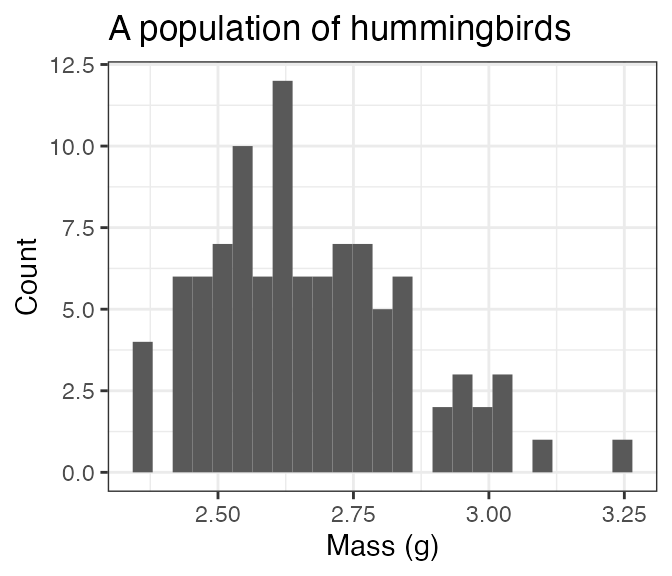
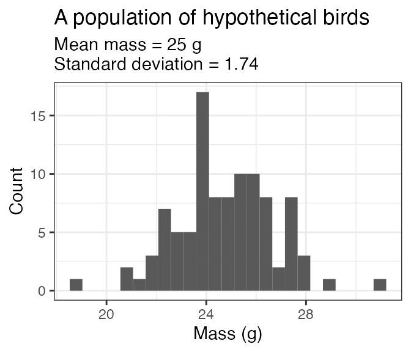

Simulate populations of individuals of a single species
The core functionality of birdsize is to simulate
individual body mass measurements for birds given either their species
ID or a mean (and possibly standard deviation) of body mass.
pop_generate achieves this for a single species.
~comm_generate uses pop_generate to simulate
body masses for multiple populations of birds of different species.~
Using species identity
For most birds in the North American Breeding Bird Survey, you can use the species’ code (AOU) to simulate a population directly. For the hummingbird Selasphorus calliope:
a_hundred_hummingbirds <- pop_generate(abundance = 100, aou = 4360)
head(a_hundred_hummingbirds)
#> aou sim_species_id genus species individual_mass individual_bmr
#> 1 4360 4360 Selasphorus calliope 2.556873 20.50623
#> 2 4360 4360 Selasphorus calliope 3.101904 23.53533
#> 3 4360 4360 Selasphorus calliope 2.833263 22.06327
#> 4 4360 4360 Selasphorus calliope 2.703245 21.33652
#> 5 4360 4360 Selasphorus calliope 2.612003 20.82052
#> 6 4360 4360 Selasphorus calliope 2.987874 22.91515
#> mean_size sd_size abundance sd_method
#> 1 2.65 0.1818394 100 AOU lookup
#> 2 2.65 0.1818394 100 AOU lookup
#> 3 2.65 0.1818394 100 AOU lookup
#> 4 2.65 0.1818394 100 AOU lookup
#> 5 2.65 0.1818394 100 AOU lookup
#> 6 2.65 0.1818394 100 AOU lookup
ggplot(a_hundred_hummingbirds, aes(individual_mass)) +
geom_histogram(bins = 25) +
xlab("Mass (g)") +
ylab("Count") +
ggtitle("A population of hummingbirds") 
To look up the AOU based on the species’ scientific name, explore the
included sd_table dataset:
sd_table
#> # A tibble: 443 × 6
#> aou genus species mean_mass mean_sd contains_estimates
#> <int> <chr> <chr> <dbl> <dbl> <lgl>
#> 1 2881 Perdix perdix 406. 31 FALSE
#> 2 2882 Alectoris chukar 504. 36.0 TRUE
#> 3 2890 Colinus virginianus 172 12.2 TRUE
#> 4 2920 Oreortyx pictus 233 16.6 TRUE
#> 5 2930 Callipepla squamata 184 13.1 TRUE
#> 6 2940 Callipepla californica 166. 14.3 TRUE
#> 7 2950 Callipepla gambelii 166 11.8 TRUE
#> 8 2960 Cyrtonyx montezumae 186. 16.8 FALSE
#> 9 2970 Dendragapus obscurus 1058. 71.0 FALSE
#> 10 2971 Dendragapus fuliginosus 1056 73.8 FALSE
#> # … with 433 more rowsUsing a known mean and standard deviation
Alternatively, you can simulate body masses for a population by
supplying the body size parameters yourself. This may be useful if you
would like to work with a species not included in the
sd_table, test sensitivities to different parameter ranges,
or generate values for simulation/null models (or, other
applications!).
Note that, if both mean mass and a species code are provided, the species code will be used and the mean mass provided will be ignored!
a_hundred_hypotheticals <- pop_generate(abundance = 100, mean_size = 25, sd_size = 3)
head(a_hundred_hypotheticals)
#> aou sim_species_id genus species individual_mass individual_bmr mean_size
#> 1 NA 1 <NA> <NA> 19.86281 88.44888 25
#> 2 NA 1 <NA> <NA> 22.60234 96.98414 25
#> 3 NA 1 <NA> <NA> 20.76744 91.30263 25
#> 4 NA 1 <NA> <NA> 26.59827 108.92055 25
#> 5 NA 1 <NA> <NA> 23.80690 100.64180 25
#> 6 NA 1 <NA> <NA> 24.14694 101.66465 25
#> sd_size abundance sd_method
#> 1 3 100 Mean and SD provided
#> 2 3 100 Mean and SD provided
#> 3 3 100 Mean and SD provided
#> 4 3 100 Mean and SD provided
#> 5 3 100 Mean and SD provided
#> 6 3 100 Mean and SD provided
ggplot(a_hundred_hypotheticals, aes(individual_mass)) +
geom_histogram(bins = 25) +
xlab("Mass (g)") +
ylab("Count") +
ggtitle("A population of hypothetical birds", subtitle ="Mean mass = 25 g\nStandard deviation = 3") 
Using a known mean, but no standard deviation
If the mean mass is not known or not provided,
simulate_population will estimate the standard deviation
based on scaling between the mean and standard deviation of body
mass:
another_hundred_hypotheticals <- pop_generate(abundance = 100, mean_size = 25)
head(another_hundred_hypotheticals)
#> aou sim_species_id genus species individual_mass individual_bmr mean_size
#> 1 NA 1 <NA> <NA> 26.24416 107.88463 25
#> 2 NA 1 <NA> <NA> 21.44791 93.42580 25
#> 3 NA 1 <NA> <NA> 20.79538 91.39020 25
#> 4 NA 1 <NA> <NA> 23.75958 100.49914 25
#> 5 NA 1 <NA> <NA> 22.17191 95.66364 25
#> 6 NA 1 <NA> <NA> 22.58620 96.93474 25
#> sd_size abundance sd_method
#> 1 1.746196 100 SD estimated from mean
#> 2 1.746196 100 SD estimated from mean
#> 3 1.746196 100 SD estimated from mean
#> 4 1.746196 100 SD estimated from mean
#> 5 1.746196 100 SD estimated from mean
#> 6 1.746196 100 SD estimated from mean
ggplot(another_hundred_hypotheticals, aes(individual_mass)) +
geom_histogram(bins = 25) +
xlab("Mass (g)") +
ylab("Count") +
ggtitle("A population of hypothetical birds", subtitle ="Mean mass = 25 g\nStandard deviation = 1.74") 